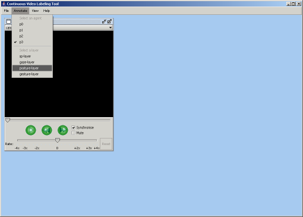
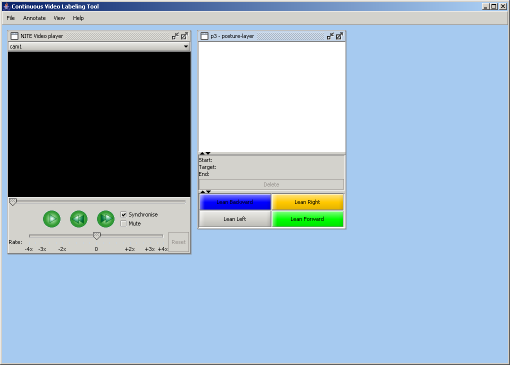
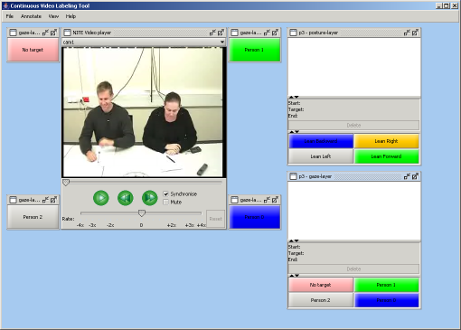
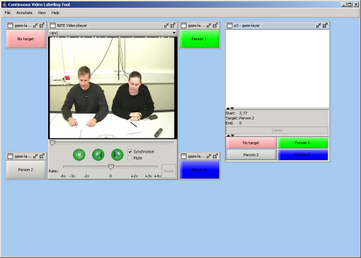
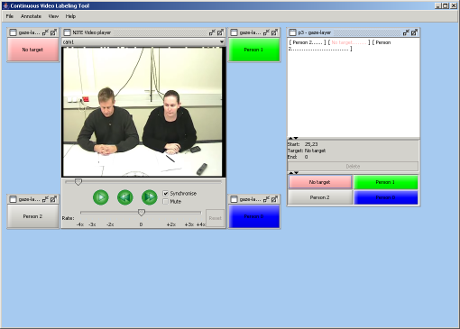
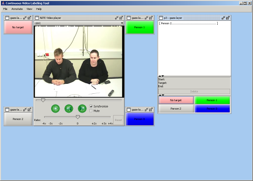

The Continuous Video Labeling Tool is started from the main program of the NITE XML Toolkit. After selecting Continuous Video Labeling, you can select an observation. In this tutorial we use the observation m4-1. When the tool is started, the screen will only show a video player. Before you can make annotations, you have to select at least one agent and one layer from the Annotate menu.

Figure 1: Selecting agents and layers for annotation
The menu in Figure 1 shows four agents named p0, p1, p2 and p3. The available layers are sp-layer (for speaking and non-speaking), gaze-layer, posture-layer and gesture-layer. Figure 2 shows the screen after agent p3 and the posture layer have been selected.

Figure 2: Posture annotation for agent p3
Your screen shows annotation windows for all combinations of the selected agents and layers. In this case there is one window for posture annotation for agent p3. An annotation window consists of three parts. The top part is the annotation area, which contains the annotations that were made. It is still empty here. Under the annotation area you can see the current annotation and a Delete button, which will delete the selected annotation. At the bottom are the target buttons. There is one button for each possible target. In this case there are four buttons named Lean Backward, Lean Right, Lean Left and Lean Forward. Those are the targets of the posture layer.

Figure 3: Posture and gaze annotation for agent p3
Now we will select the gaze layer as well from the Annotate menu. Another annotation window appears, but this time the effect is different, as shown in Figure 3. The targets of the gaze layer are agents. Because of that, the buttons are arranged so that they match the positions of the speakers in the video, and an extra set of buttons is created and arranged around the video player. In signal cam1, which is currently selected in the video player, the camera faces persons 3 and 1. At the other side of the table, but not visible in the video, are persons 2 and 0. From the positions of the buttons it should be clear where the agents are seated. When you select another signal at the top of the video player, the buttons will be rearranged.
It is assumed that an agent cannot be the target of his own annotation. In the case of gaze, the agent cannot gaze at himself. That is why in this screen there is no button for person 3. At his position there is a button named No target.
Now we are ready to make some annotations. We don't want to annotate posture for now, so deselect the posture layer from the Annotate menu. Then we start the video. While the video is played back, you can click the target buttons to make annotations. Sometimes it is easier to make annotations by pausing the video at certain points. With the slider at the bottom of the video player, you can also slow down or fasten up playback. We are making annotations for person 3, which is the person at the left in the current video signal. In Figure 4, the video is paused while person 3 is gazing at person 2.

Figure 4: Person 3 gazes at person 2
At this point we click Person 2. In the annotation window you can see that person 2 is the current target. The start time of this annotation has been filled with the current time (2.77). The end time is still 0. The annotation is not really made until the end time is filled. That is done as soon as you start a new annotation. For instance Figure 5 shows a later point in the video. At this point person 3 stopped gazing at person 2 and is now gazing at nobody.
Figure 5: Person 3 stopped gazing at person 2
Now you click No target. The previous annotation is completed. The end time is filled with the current time. The annotation is added to the annotation area at the top of the annotation window. The dots give an indication of the duration. The annotation window also shows the new annotation. The target is No target, the end time is still 0 and the start time is the current time. Note that this is the same as the end time of the previous annotation. The Continuous Video Labeling Tool ensures that the annotations are always continuous, so the end time of one annotation is the start time of the next annotation.
We continue a bit more, so our screen looks like the screen in Figure 6.

Figure 6: More gaze annotations for person 3
You can select annotations by clicking them in the annotation window. Note that the annotation window must be activated first! Then you can choose to play the video fragment for the selected annotation. This is done by holding the CTRL key and clicking the right mouse button.
The annotations can be edited by deleting them or inserting new annotations over them. We will now delete the No target annotation. Select it in the annotation area and then click the Delete button. To keep the annotations continuous, the previous annotation (the first Person 1) will fill the empty space. Because now we have two Person 1 annotations after each other, they can be merged, so only one annotation is left. Your screen should look like Figure 7.

Figure 7: Deleted the no target annotation
Now we will insert the No target annotation again. Reset the video to the start by dragging the playback line marker. Then start the video. Note that as the video is playing, the annotation for that part of the video is highlighted. When person 3 stops gazing at person 2, click the No target button (you may want to pause the video at that point). Continue playing until person 3 gazes at person 2 again. Then click Person 2. The annotation has been inserted.